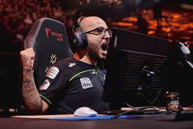
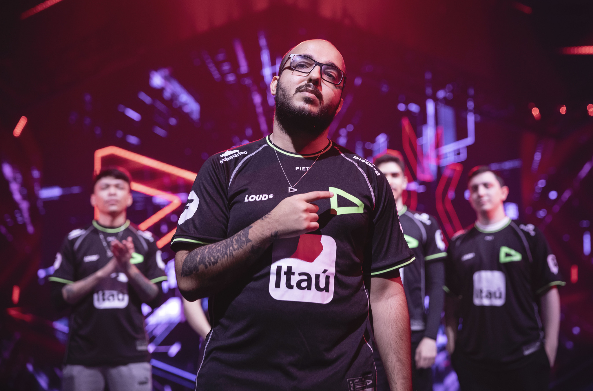
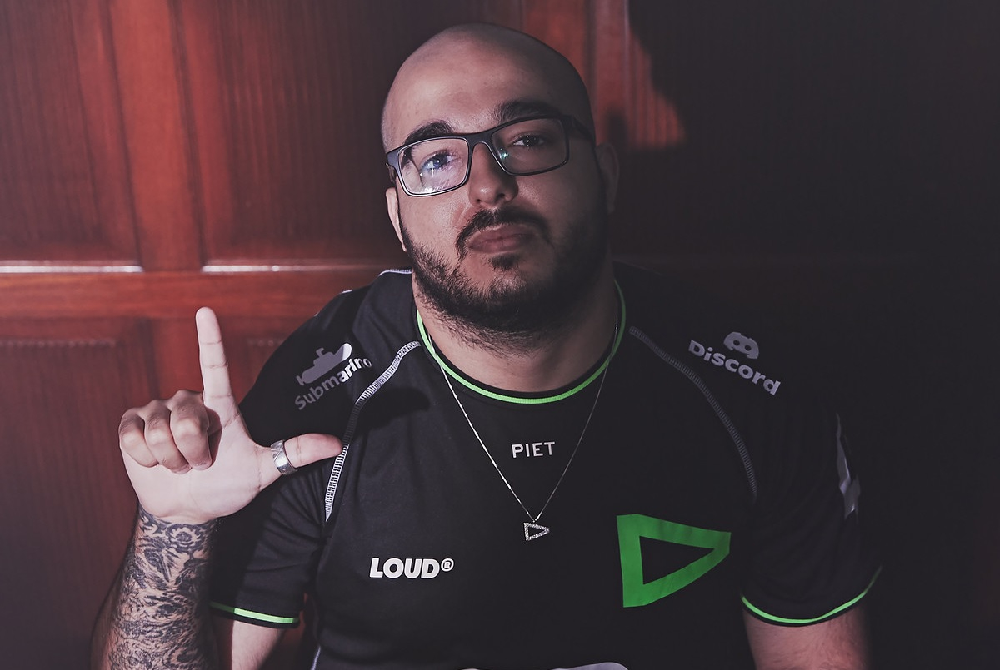

A trajetória de Gustavo “Sacy” Rossi na LOUD é amplamente considerada um dos capítulos mais vitoriosos e impactantes da história dos eSports no Brasil
. O ingresso oficial de Sacy na organização ocorreu em 3 de fevereiro de 2022, quando a LOUD anunciou sua entrada no VALORANT com uma lineup que misturava a experiência de veteranos e o talento bruto de jovens promessas
. Sacy, ao lado de seu parceiro estratégico Matias “Saadhak” Delipetro, foi o arquiteto por trás da montagem do elenco, escolhendo pessoalmente cada integrante da equipe que ficou inicialmente conhecida como “pANcada e amigos”
. O jogador revelou posteriormente que escolheu a LOUD mesmo possuindo propostas financeiras mais vantajosas de outras equipes, pois acreditava na força da torcida brasileira e no impacto transformador que um título mundial traria para o cenário nacional
.
O domínio da equipe no cenário brasileiro foi imediato e avassalador, culminando em dois títulos invictos do VALORANT Challengers Brasil (VCB) 2022
. Essa hegemonia doméstica pavimentou o caminho para os palcos internacionais, onde a LOUD rapidamente se provou uma potência global
. No Masters Reykjavík 2022, o time surpreendeu o mundo ao alcançar a grande final, terminando como vice-campeão após uma derrota para a OpTic Gaming
. Embora a equipe tenha enfrentado um revés no Masters Copenhagen, sendo eliminada precocemente, esse momento serviu de combustível para o foco total no objetivo principal da temporada: o campeonato mundial
.


A consagração definitiva veio em setembro de 2022, durante o VALORANT Champions em Istambul, na Turquia
. Sacy liderou a LOUD em uma campanha histórica nos playoffs, superando equipes como Leviatán e DRX antes de reencontrar a OpTic Gaming na grande final
. Em uma série melhor de cinco (MD5) eletrizante, que atingiu picos de audiência superiores a 1,5 milhão de espectadores, a LOUD derrotou seus rivais norte-americanos por 3 a 1
. Individualmente, Sacy teve uma performance monumental, sendo eleito o MVP do mapa decisivo (Ascent) após registrar 32 abates e um ACS de 313, garantindo o primeiro e único título mundial de VALORANT para o Brasil até o momento
.
Além dos troféus, o legado de Sacy na LOUD é marcado por seu papel crucial na formação de novos talentos, como aspas e Less
. Ele não foi apenas um jogador habilidoso, mas um mentor que ajudou a desenvolver a mentalidade competitiva e a disciplina profissional desses jovens atletas
. Sua passagem pela organização encerrou-se em outubro de 2022, quando ele aceitou o desafio de migrar para a organização norte-americana Sentinels, partindo com o sentimento de dever cumprido após conquistar tudo o que era possível dentro do cenário nacional e internacional pela LOUD
.
